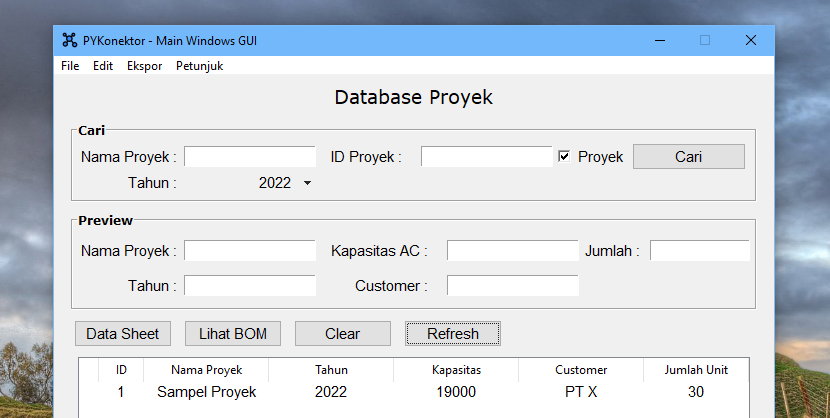

Fitur
Antarmuka pengguna yang simpel dan intuitif
Tata letak widget program telah disusun sedemikian rupa agar pengguna dapat mengerti atau memahami alur penggunaan program dalam sekali lihat. Secara garis besar, terdapat dua alur penggunaan, yaitu alur penggunaan untuk user jika ingin mereview data saja, atau sebagai admin yang dapat memanipulasi atau melakukan query database.
Performa
Dari sisi GUI, program dikembangkan dengan menggunakan library Tcl/Tkinter Python (100%), dan dapat dibuka dengan cepat karena program relatif ringan. Selain itu, digunakan database SQLite dimana waktu query adalah pada hitungan 1-2 digit milisecond untuk query ringan.
Ukuran file kecil
Saat ini, distribusi instalasi yang tersedia untuk sistem operasi windows berukuran 36 MB saja.
Ekspor ke format file populer
Hasil dari database dapat di-ekspor ke berbagai file yang umum digunakan, seperti PDF, Excel, dan CSV. Database juga dapat dibagikan ke PC lain.
Open-source
Source code dapat dilihat di github, sehingga dapat dimodifikasi sesuai preferensi atau keperluan spesifik masing-masing. Dari source code tersebut, dapat juga program di-build pada sistem masing-masing.
PYKonektor menerapkan Lisensi MIT dan dimaintanance di github oleh Alvians Maulana.
©2022